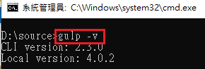
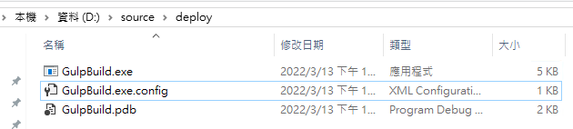

Author：Mat
Date：2022-03-13
Description：試著嘗試看看前端工程師常用的任務排程器Gulp
本文為建置gulp任務管理工具筆記，雖然gulp多為前端建置產出專案使用，但並不限制於此情境。透過安裝外掛的任務排程，也可執行msbuild等動作。
安裝node.js，通常會隨著安裝npm工具
撰寫當下版本
- node.js：16.14.0
- npm：8.3.1
參考連結
node -v
npm -v
使用CMD(命令提示字元)輸入npm install -g gulp-cli
npm install -g gulp-cli
※備註
刪除為使用：npm uninstall -g gulp-cli
全域npm module預設位置通常在
C:\Users\{當前使用者}\AppData\Roaming\npm\node_modules同樣也可以使用指令：
gulp -v，來檢查使用的版本(3.x與4.x的設定方式有所差異)
使用CMD(命令提示字元)，將當前目錄切換到指定資料夾
※備註
CMD切換目錄的方式為>cd {目錄}，例如：想將當前目錄切換到D:\source下，則輸入cd "D:\source"，如果當前並不在D槽下，則透過>D:來做更換動作
輸入指令npm init將npm在當前資料夾做初始化，會問一些基本問題，但基本上可以全部按下enter略過，完成後將會在資料夾內建立package.json檔案，如果連enter都不想按，可以加入參數-y
npm init
輸入指令：npm install --save-dev gulp，來安裝gulp模組
npm install --save-dev gulp
依據想執行的流程來做安裝，例如js、css等靜態檔案壓縮產出合併，需要使用的模組看開發者的需求輸入相關指令安裝，由於平常都是使用C#做開發，在這裡我們使用gulp-msbuild作為範例
安裝gulp擴充模組與一般npm使用一樣，但依據產品不同，這裡安裝的方式都是安裝於指定的專案資料夾中，而不是裝成全域的npm模組，輸入指令npm install --save-dev gulp-msbuild
npm install --save-dev gulp-msbuild
※備註：
--save與--save-dev的不同
--save為Packages required by your application in production，也就是正式環境也需要的模組--save-dev為Packages that are only needed for local development and testing，也僅需要在開發或測試使用的模組
參考：Specifying dependencies and devDependencies in a package.json file
對於佈署成品，通常會把目的資料夾先做清空，這裡我們再安裝一個del模組，同時練習一下怎麼一次裝複數個npm的模組，輸入指令npm install --save-dev gulp-msbuild del，之後可以一次安裝完成，也就是模組名稱間，使用半形空格「
」做分隔號
npm install --save-dev gulp-msbuild del
畢竟gulp只是一個任務管理的模組，實際上執行的機器還是需要自行安裝msbuild，並依據想要建置的專案型態來安裝所需要的相關程式，這裡我們使用visual studio build tools 2019，版本為16.11.11，建置的程式為Console Application，因此再額外選擇.NET 桌面建置工具安裝
npm的相關操作都做完了，再來就是要建立gulp的設定，既然gulp是前端工程師常用的任務管理工具，當然就會有定義「任務」的設定，所以在專案資料夾的根目錄中，建立一個gulpfile.js作為gulp的程式進入點
// 匯入需要的屬性
const { series, src, task } = require('gulp');
// series：依序執行
const args = require('yargs').argv;
const msbuild = require('gulp-msbuild');
const del = require('del');
// 輸出資料夾
const outputArtifactDir = 'deploy';
/** 執行MSbuild */
function fnBuild() {
return src('**/*.sln')
.pipe(
msbuild({
toolsVersion: 'auto',
targets: ['Clean', 'Build'],
customArgs: ['/restore'],
errorOnFail: true,
stdout: true,
properties: {
Optimize: true,
DebugSymbols: false,
DebugType: 'None',
Configuration: args.mode,
OutDir: outputArtifactDir,
//DeployOnBuild : true,
UseWPP_CopyWebApplication: false,
PipelineDependsOnBuild: false,
},
})
);
}
/** 執行Clean */
function fnClear() {
return del([outputArtifactDir]);
}
// 如果想從cmd執行呼叫task，可將task做成global的方式，cmd:>gulp {task名稱}
task('clean', fnClear);
task('fnBuild', fnBuild);
task('build', series('clean', 'fnBuild'));
exports.default = series(fnClear, fnBuild);
使用的方案為隨手建立的測試用Console Application，並調整為sdk形式
目前專案資料夾的現況
再來就是輸入指令：gulp --mode debug，如果是依據上面範例建立的gulpfile，那就是輸入：gulp build --mode debug也可以，最後就看能不能把建置成品放到deploy資料夾中啦
視窗中會顯示執行了什麼任務

建置完成
產出資料夾

※備註：參數 --mode
除了gulp外，這一份gulpfile還載入yargs模組，因此可透過參數傳遞要建置的模式(此處定義key為mode)，常見的如預設的debug或release，或者之後想新增什麼參數都可以自行增加※備註：成品位置
透過msbuild產生的成品位置計算為csproj檔案位置起算，若是一個方案中包含複數的專案時，請記得做好一致的檔案系統結構，佈署的任務才不會太難寫喔，類似的架構可以參考SiteCore Helix※錯誤處理：Local gulp not found
當開心的準備開始執行gulp指令時，卻發現要求Local需要安裝gulp才能用，gulp在先前的版本是將gulp安裝於全域當中，但目前官方文件在全域中安裝的是gulp-cli，但還是可以透過一些處理來使用處理方式有以下幾種
- 在Local安裝gulp完事，輸入指令：
npm install --save-dev gulp- 建立檔案連結到global的gulp上，指令：
npm link gulp --no-bin-links※錯誤處理：Task never defined: default
眼尖可能有注意到gulpfile建立task的起手式是帶有task名稱的，當gulpfile中放有default任務的時候，才可以省略
如何還原node_modules?
npm使用上會在專案資料夾使用npm init做初始動作，但這些東西在實務上不太會放到版本控管中，理由就跟我們平常在專案檔案中的packages.config，在透過msbuild建置時才還原nuget的套件一樣，所以版控中可以保留package.json，接著使用CMD輸入指令npm install，來重新還原設定中的node_modules，可簡單透過這樣的動作來幫助其他開發者建置開發的環境，不用每次都完整的重新安裝
為什麼要特別改用sdk的專案?
MsBuild的桌面建置工具預設情況只有安裝sdk的工具，如果想要輕輕鬆鬆建立出來就能用的話，需要另外安裝「.NET Framework 4.8 開發工具」，如果是選用dotnet core的話就沒有這種煩惱了，預設就是使用sdk的格式，但還是常常碰到還在.NET Framework的環境，這邊就使用常用的.NET Framework 4.8了